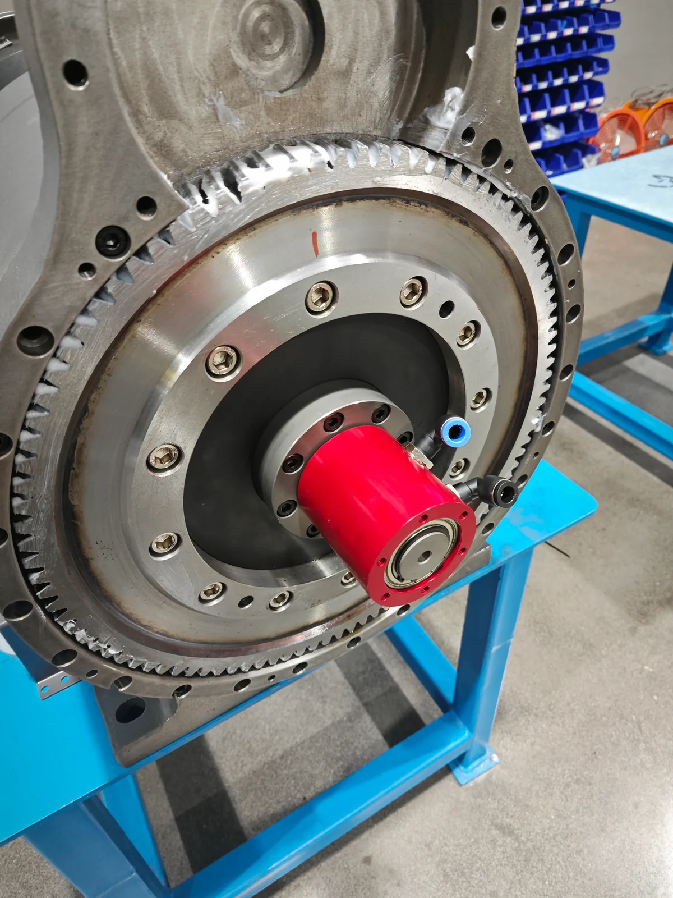

写真で確認できる3件の実際の組込み事例と、装置条件を整理するための2件の技術選定例を紹介します。
現在、写真資料に基づく3件の実際の組込み事例を掲載しています。写真から確認できる事実と、別途確認が必要な項目を区別して示します。
2点の工場内の組立写真で、BP-2P-95-0001の取付部、チャック周辺の構成、空圧ホースの配管状態を確認できます。詳細ページでは、写真から確認できる範囲と確認できない項目を明確にしています。
| 項目 | 確認できる内容 |
|---|---|
| 製品 | BP-2P-95-0001 |
| 使用流体 | 空気（圧縮空気） |
| 写真資料 | 工場内の組立写真2点 |
| 状態 | 工場内での組立・取付状態 |

工場内で撮影された2点の写真には、レーザー切断機の後方チャックに近接して取り付けられた空圧用ロータリジョイント、チャック構造、取付フランジ、および一部の空圧ポートが写っています。2点は同じ用途区分の実機取付写真ですが、同一装置を別角度から撮影したものとは位置付けていません。
BP-3P-0004およびBP-2P-08-0001は、レーザー管切断機の後方チャックにおける空圧回路で採用実績があります。ただし、各写真に写る製品をいずれかの型式に個別特定したものではありません。
| 項目 | 確認できる内容 |
|---|---|
| 用途 | レーザー切断機の後方チャック |
| 構成部品 | 空圧用ロータリジョイント |
| 写真資料 | 工場内で撮影された取付写真2点 |
| 目視できる状態 | 後方チャックへの取付状態と周辺の取付構成 |
| 用途で確認済みの型式 | BP-3P-0004、BP-2P-08-0001 |
| 写真と型式の対応 | 各写真の製品型式は個別に特定していません |
同様の組込みを検討する場合は、チャック図面、空圧回路数、使用圧力、回転数、設置可能スペースをご提示ください。

近接写真では、歯車部、チャック中央部、取付フランジ、ロータリジョイント、および目視できる空圧ポートの位置関係を確認できます。
これらの写真だけでは、回路数、使用圧力、回転数、各ポートの用途、または各写真に写る製品型式を確定できません。後方チャックの圧縮空気回路に対して固定側から回転側への接続を設ける構成として、装置条件ごとの技術確認が必要です。
この顧客仕様では、3つの独立した圧縮空気回路をクランプ、アンクランプ、除塵用エアブローに割り当てています。電気スリップリングは、ワーク有無検出またはクランプ完了検出に使用する外部センサ信号を伝送します。検出・判定を行うのは外部センサと機械制御装置です。
| 項目 | 確認済みの内容 |
|---|---|
| 製品 | BP-3P-S06-0001 |
| 空圧機能 | この顧客仕様ではクランプ、アンクランプ、除塵用エアブロー |
| 電気部の役割 | 外部センサ信号の伝送経路 |
| 根拠 | 実機組込み写真、製造準備写真、案件責任者による確認 |
上の3項目は工場内で撮影された写真に基づく実際の組込み事例です。以下の2項目は技術選定例であり、顧客装置の性能実績ではありません。最終的な機種選定には、実際の装置図面と使用条件の確認が必要です。
以下の2項目は、選定手順と必要条件を整理するための技術例です。写真に基づく実際の用途事例や、顧客装置の性能実績ではありません。

塩分、湿度、温度サイクル、困難な保守アクセスは、表面処理、シャフト材、軸受保護、シール、試験計画へ影響します。屋内標準空圧品をそのまま海洋用途へ使用できるとは限りません。
| 必要情報 | 重要な理由 |
|---|---|
| 使用流体・濃度 | シール材・金属材の適合性を決定。 |
| 圧力、回転速度、運転条件 | 圧力と回転速度を組み合わせた運転点を定義。 |
| 温度範囲 | エラストマー選定と寸法クリアランスに影響。 |
| 腐食条件・試験規格 | 表面処理、材質、検証要件を決定。 |
| 保守周期 | 軸受保護と保守性に影響。 |
BP-2P-130-0001は高負荷向けの参考機種ですが、そのまま海洋用途に適合するとは限りません。腐食・安全重要用途では図面、材質、検証計画の確認が必要です。

圧力・回転速度が適合しても、ボルトパターン、中空部クリアランス、ホース干渉、固定配管荷重で取付できない場合があります。製作前のCAD確認で寸法リスクを減らせます。
| 確認項目 | 確認内容 |
|---|---|
| 中空部 | シャフト、ドローバー、ケーブル、工具周辺のクリアランス。 |
| 外形・スペース | 本体径、全長、保守アクセス。 |
| 取付方法 | ボルトサークル、ねじ仕様、深さ、位置決め部。 |
| 接続口・ホース | 継手サイズ、曲げ半径、外力がないこと。 |
| 運転条件 | 使用流体、常用圧力、ピーク圧力、回転速度、運転条件。 |
BP-2P-30-0001は中空径30 mmの標準候補です。注文前に最新図面を入手し、装置内の全取合いを確認してください。
技術上の注意： 3件の実用途事例は、工場内写真で確認できる取付状態を示します。BP-2P-95-0001とBP-3P-S06-0001は案件責任者が各事例の製品型式を確認しています。レーザー用途ではBP-3P-0004およびBP-2P-08-0001の採用実績がありますが、各写真の型式は個別に特定していません。写真から顧客名、寿命、性能向上、検出精度、コスト削減を推定していません。屋外・海洋設備とCNC装置の項目は技術選定例です。 最終更新：2026年8月8日。